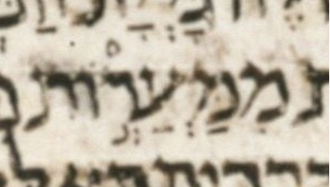

| bcv (tanach.us) | 1s17:23 |
| MPK | מִמַּעֲרְ֣וֹת |
| qere | מִמַּעַרְכ֣וֹת |
| at issue | עַ |
| at issue English | changed a ḥataf pataḥ to a pataḥ under ayin |
| folio col line | 159B 2 11 |
The MPK’s ע has a ḥataf pataḥ where the qere has a pataḥ.
Unexpected ḥataf vowels are a known feature (bug?) of ל. I.e. this is rare but hardly unique. This unexpected ḥataf may well be unrelated to the ketiv/qere differences in this word. If it is unrelated, this should have been a bracket-1 or bracket-U note in WLC, not a bracket-a note.
Breuer notes that א and ק have the expected pataḥ under ע. (א is the Aleppo Codex and ק is the Cairo Codex of The Prophets.)
Dotan notes that strictly speaking, the implied qere is מִמַּעֲרְכ֣וֹת (ḥataf pataḥ under ע).